Inhaltsverzeichnis der Fallstudie
1. Der Workflow im Überblick
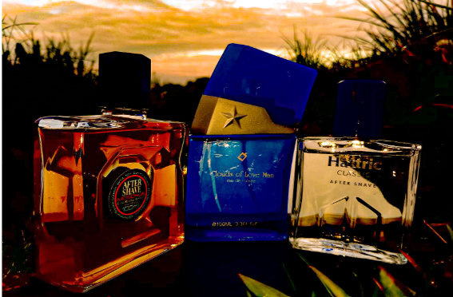
Outdoorinszenierung von Parfümflakons: Visuelle Inszenierung, Fotografie und Retusche[cite: 1].
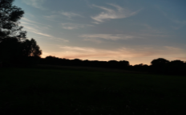
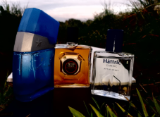
- Set-Aufbau, Licht & Produkte: Natürliche Kulisse bei Dämmerung / Sonnenuntergang mit Hâttric Classic, Clouds of Love Man und Moschus After Shave[cite: 1].
-
RAW / Fotoaufnahme: Klares Einfangen der Marken, Reflexionen im Glas und Gegenlicht-Konturen vor dem Abendhimmel[cite: 1].
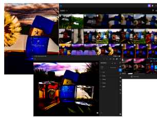
-
Post Production: Gezielte Herausarbeitung von Kontrasten, Sättigung, Farbtonanpassungen und Hervorhebung der Produkt-Logos[cite: 1].
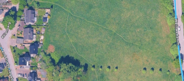
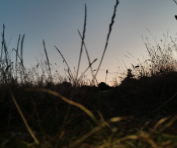
2. Location Scouting & Lichtverhältnisse
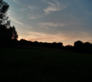
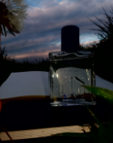
Location: Freifläche / Wiese am Wellseedamm in Kiel (Kiel Wellsee)[cite: 1].
Begründung: Die leicht erhöhte Wiesenlandschaft bietet freien Blick Richtung Westen/Südwesten, um das natürliche Restlicht der Abenddämmerung und den Farbverlauf des Himmels ohne störende Gebäudesilhouetten als Kulisse zu nutzen[cite: 1].
Lichtverhältnisse: Mir war wichtig, das warme Licht kurz vor und nach Sonnenuntergang einzufangen[cite: 1]. Das Gegenlicht trifft dort genau so auf das Glas, dass die Konturen der Parfümflakons knackig hervorgehoben werden, während der Hintergrund fließend in die Dämmerung übergeht[cite: 1].
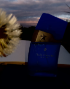
3. Produkt-Porträts & RAW-Aufnahmen
1. Hâttric Classic After Shave
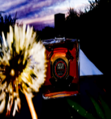
Tradition & Kultstatus: Ein absoluter Klassiker unter den Rasierwassern im deutschsprachigen Raum, seit Jahrzehnten fest im Drogerie-Segment etabliert[cite: 1].
Duftprofil: Zeitloser, würzig-frischer und meerartiger Herrenduft mit holzigen und leichten Zitrusnoten[cite: 1].
Wirkung: Beruhigt und erfrischt die Haut nach der Nassrasur, wirkt desinfizierend und hinterlässt ein angenehm kühles Hautgefühl[cite: 1].
2. Clouds of Love Man Eau de Toilette
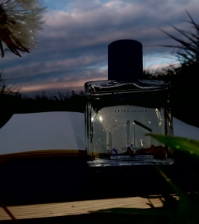
Dufttyp: Erschwingliche Duftalternative (Duftzwilling), vom Design inspiriert an ikonische Flakons mit Stern-Motiv[cite: 1].
Duftprofil: Süß-orientalisch, gourmand oder intensiv holzig mit Noten von Vanille, Amber, Tonkabohne oder Kaffee/Schokolade[cite: 1].
Verwendungszweck: Höhere Duftöl-Konzentration als ein After Shave; dient als langanhaltendes Parfüm für den Tag oder Abend[cite: 1].
3. Moschus After Shave
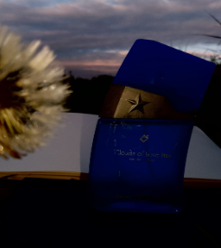
Duftcharakter: Sinnlich, warm und leicht pudrig-holziger Moschus-Duft[cite: 1].
Markenzeichen: Roter & schwarzer Kreis-Ausschnitt auf golden-amberfarbenem Ton im transparenten Glasflakon[cite: 1].
Wirkung: Verbindet die hautberuhigende Funktion eines After Shaves mit einem prägnanten, maskulinen Aroma[cite: 1].
Besten RAW Shots & Selektion:
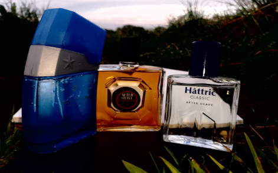
[Abb. 13] Gruppenaufnahme
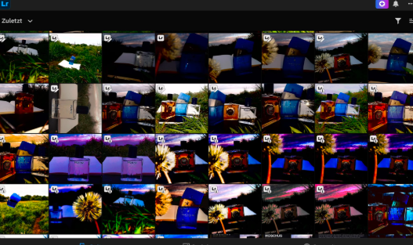
[Abb. 14] Clouds of Love Man
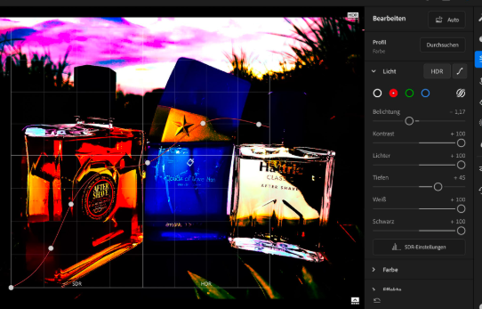
[Abb. 15] Moschus After Shave
4. Technische Bildbearbeitung in Adobe Lightroom
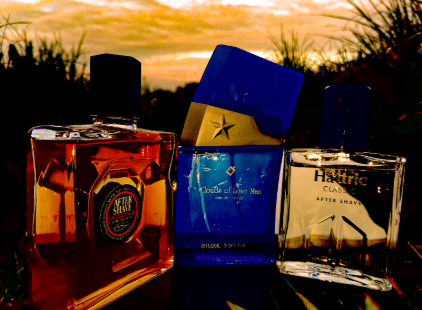
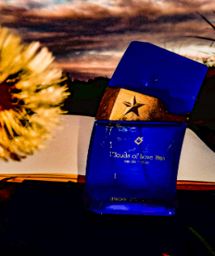
Bildübersicht & Selektion (Culling): Sichtung aller Fotos in Adobe Lightroom zum Vergleich verschiedener Winkel, Lichtverhältnisse und Einzel- bzw. Gruppenaufnahmen, um das stärkste Motiv auszuwählen[cite: 1].
Gradationskurve & Lichtsteuerung: Anpassung der Belichtung (-1.17), Kontrast (+100), Lichter (+100) sowie eine gezielte S-Kurve in der Gradationskurve zur Akzentuierung der Lichtreflexe auf den Glaskanten und Verbesserung der Logo-Lesbarkeit[cite: 1].
Finale Stimmungsanpassung: Intensives Color Grading verwandelt den Abendhimmel von Graublau in ein dramatisches Violett-Rot, was dem Ensemble einen edlen, mystischen Look verleiht[cite: 1].
5. Finale Ergebnisse
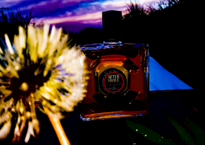
[Abb. 18] Das Flakon-Trio nach dem finalen Color Grading
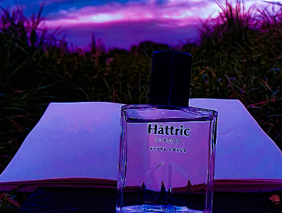
[Abb. 19] Finale Ausarbeitung & Kontrastverstärkung
Mit diesem Vorher-Nachher-Vergleich zeige ich mein Gespür für:
- Visuelles Storytelling: Produkte gezielt in Szene setzen und Emotionen erzeugen[cite: 1].
- Technisches Know-how: Beherrschung von Adobe-Werkzeugen zur professionellen Nachbearbeitung[cite: 1].
- Präzision & Struktur: Sauberes Dokumentieren von Arbeitsschritten von der Idee bis zum Endprodukt[cite: 1].
6. Quellen- und Bildverzeichnis
Quellen
- [1] Hâttric – CLASSIC After Shave[cite: 1]
- [2] Parfimo – Hâttric Classic Rasierwasser[cite: 1]
- [3] Der 24h Shop – Omerta Clouds of Love for Men[cite: 1]
- [4] CosmeticWelt – Omerta Clouds of Love Man Eau de Toilette[cite: 1]
- [5] Müller Drogerie – Axe Aftershave Moschus[cite: 1]
- [6] Idealo – Moschus After Shave Übersicht[cite: 1]
Bildverzeichnis
- [Abb. 1] port1.png: Deckblatt – Produktfoto Ensemble „Parfümflakons im Dämmerungslicht“[cite: 1]
- [Abb. 2] port2.png: Workflow-Set-Aufbau – Dämmerungshimmel über der Wiese[cite: 1]
- [Abb. 3] port3.png: Workflow-Set-Aufbau – Parfümflakons-Ensemble bei Abendlicht[cite: 1]
- [Abb. 4] port4.png: RAW / Fotoaufnahme – Clouds of Love Man mit Löwenzahn-Silhouetten[cite: 1]
- [Abb. 5] port5.png: Post Production – Adobe Lightroom Mediathek / Culling & Fotoübersicht[cite: 1]
- [Abb. 6] port6.png: Post Production – Adobe Lightroom Bearbeitungsoberfläche[cite: 1]
- [Abb. 7] port7.png: Location Scouting – Kartenansicht Freifläche / Wiese am Wellseedamm[cite: 1]
- [Abb. 8] port8.png: Location Scouting – Perspektive der Wiesenlandschaft bei Dämmerung[cite: 1]
- [Abb. 9] port9.png: Lichtverhältnisse – Abendhimmel über dem Horizont[cite: 1]
- [Abb. 10] port10.png: RAW-Foto – Hâttric Classic After Shave[cite: 1]
- [Abb. 11] port11.png: RAW-Foto – Clouds of Love Man Eau de Toilette[cite: 1]
- [Abb. 12] port12.png: RAW-Foto – Moschus After Shave mit Löwenzahn[cite: 1]
- [Abb. 13] port13.png: RAW-Selektion – Flakon-Ensemble Gruppenaufnahme[cite: 1]
- [Abb. 14] port14.png: RAW-Selektion – Einzelaufnahme Clouds of Love Man[cite: 1]
- [Abb. 15] port15.png: RAW-Selektion – Einzelaufnahme Moschus After Shave[cite: 1]
- [Abb. 16] port16.png: RAW-Selektion – Nahaufnahme Hâttric Classic After Shave[cite: 1]
- [Abb. 17] port17.png: RAW-Selektion – Nahaufnahme Moschus After Shave Flakon[cite: 1]
- [Abb. 18] port18.png: Endergebnis – Das Flakon-Trio nach Color Grading[cite: 1]
- [Abb. 19] port19.png: Endergebnis – Finale Ausarbeitung & Kontrastverstärkung[cite: 1]